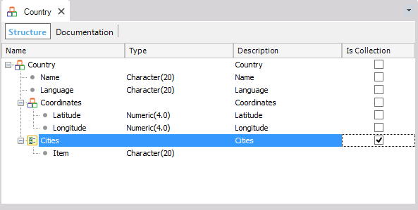
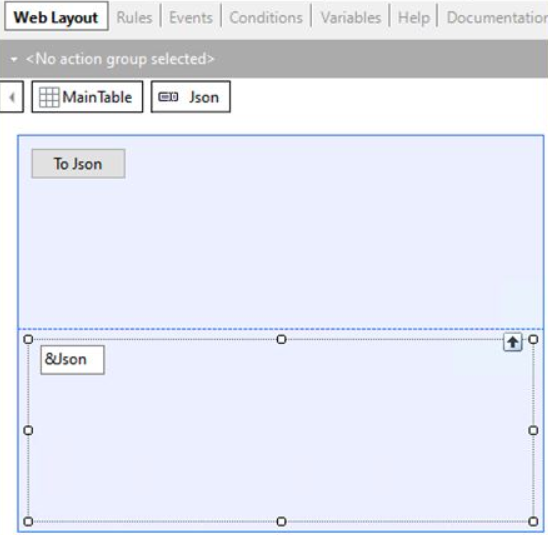
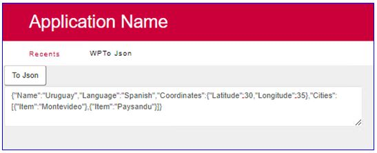

Returns a string with the JSON representation for the Structured Data Type (SDT) object or Business Component variable.
&String = &Vble.ToJson([&Boolean])
Where:
&String
Attribute or variable based on the Character data type.
&Vble
Variable based on an SDT or Business Component.
&Boolean
Optional parameter: It only applies to Business Component variables. If True, then the returned string contains the auxiliary variables (old values, mode, initialized flag). Otherwise, it only contains the record data. The default value is True.
Generators: .NET, .NET Framework, Java
Given the following SDT:

Define a Data Provider (for example, named DPOneCountry). Drag the Country SDT from the KB Explorer to the Data Provider Source and fill in the data as shown:
Country
{
Name = "Uruguay"
Language = "Spanish"
Coordinates
{
Latitude = 30
Longitude = 35
}
Cities
{
Item
{
Item = "Montevideo"
}
Item
{
Item = "Paysandu"
}
}
}
In a Web Panel object define a variable named &Country based on the Country SDT.
The purpose of the Web Panel is to convert the stored data to a Json format. To achieve this, when the user presses a button, the Event associated with it will load into memory (in the &Country variable) the data of the country stored in the database. After that, the Json method will be applied to the &Country variable, to convert the data to a Json format, to then be displayed in the Web Panel Web Layout.
Design the Web Panel Web Layout like this:

Define the following code associated with the Web Panel button:
Event 'ToJson' &SDTCountry = DPOneCountry() &Json=&SDTCountry.ToJson() Endevent
The involved variables are:
&Json Type: Character(200) &Country Type: Country
In run-time when you press the button, the country data is loaded in the &Country variable and converted to Json format, as the following image shows:

| Backlinks |
| Toc:Business Component |
| Business Component FromJson method |